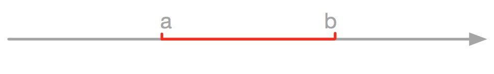

支持向量机（support vector machine，SVM）是一个有监督的机器学习算法，它的基本模型是定义在特征空间的间隔最大的线性分类器。利用核技巧将输入数据映射到高维空间，来实现非线性分类器。
支持向量机基础
为了方便讲明白SVM的工作原理，下面主要结合图片和公式说明，如图1，假设在二维空间里有两类线性可分的数据，直观上看，很容易在中间画出一条线将两类数据分开。
 图1：二维空间里数据
图1：二维空间里数据
定义超平面（即分割线）可以通过如下线性方程组来描述：
\[
\begin{equation}
\boldsymbol w^T \boldsymbol x + b = 0
\end{equation}
\]
其中\(\boldsymbol w=(w_1;w_2;w_3;...;w_d)\,\)为法向量，\(b\,\)是超平面的截距，显然这个划分超平面可以被这两个参数\(\boldsymbol w\,\)和\(\,b\,\)确定，后面此超平面将简称为超平面（\(\boldsymbol w\),\(b\)）。
假设超平面能很好的将训练样本分类，如果定义图1中红色点为正类，即\(y_i=1\)，此时希望\(\boldsymbol w^T \boldsymbol x > 0\)，另一侧蓝色点为负类，即\(y_i=-1\)，此时希望\(\boldsymbol w^T \boldsymbol x < 0\)，易知分类决策函数可以定义为：
\[
\begin{equation}
y = sign(\boldsymbol w_T \boldsymbol x + b)
\end{equation}
\]
如图2所示，两个超平面都能满足条件，那到底哪个超平面才是最优的超平面呢？也就是\(\boldsymbol w \)和\(\,b\,\)应该如何确定其最优值。

图2：超平面
函数间隔（Function Margin）
对于给定的超平面（\(\boldsymbol w,b\)），定义超平面关于点（\(x_i,y_i\)）的函数间隔为
\[
\begin{equation}
\label{gammahat}
\hat\gamma_i=y_i(\boldsymbol w^T \boldsymbol x_i+b)
\end{equation}
\]
定义超平面关于整个数据集\(\,T\,\)的函数间隔为数据集内关于所有点函数间隔的最小值：
\[
\hat\gamma = \min \hat\gamma_i\,,i=1;2;...;N
\]
函数间隔可以表示分类预测的正确性和确信度，但是选择分离超平面仅靠函数间隔是不够的。超平面的选择是希望间隔最大化，如果使用函数间隔表示，那么成比例的增大\(\boldsymbol w\)和\(b\)，比如将它们改为\(2\boldsymbol w\)和\(2b\)，那么就能使函数间隔增大2倍，可是实际我们知道这对超平面的选择没有任何帮助。因此我们需要对函数间隔归一化，这也就变成了几何间隔。
\[
\gamma_i = \frac{y_i(\boldsymbol w^T \boldsymbol x_i + b)}{||\boldsymbol w||}
\]
几何间隔（Geometric Margin)
如图3，定义点\(A\)与超平面的距离为超平面关于点\(A\)的几何间隔，由距离公式可知
\[
\gamma_i = \frac{|\boldsymbol w^T \boldsymbol x_i + b|}{||\boldsymbol w||}
\]
距离公式：点（\(x_0,y_0\)）到点\(Ax+By+C=0\)的距离为：
\[d = \frac{|Ax_0+By_0+C|}{\sqrt{A^2+B^2}}\]
当点\(y_i=1\)时，\(\boldsymbol w^T \boldsymbol x_i + b>0\)，有：
\[|\boldsymbol w^T \boldsymbol x_i + b| = y_i(\boldsymbol w^T \boldsymbol x_i + b) \]
当点\(y_i=-1\)时，\(\boldsymbol w^T \boldsymbol x_i + b<0\)，有：
\[|\boldsymbol w^T \boldsymbol x_i + b| = y_i(\boldsymbol w^T \boldsymbol x_i + b) \]
所以超平面关于点\(A\)（\(x_0,y_0\)）的几何间隔可以表示为：
\[
\begin{equation}
\label{gamma}
\gamma_i = y_i(\frac{\boldsymbol w^T x_i + b}{||w||})=y_i(\frac{\boldsymbol w^T}{|\boldsymbol w|}x_i+\frac{b}{||\boldsymbol w||})
\end{equation}
\]
定义超平面关于整个数据集\(\,T\,\)的几何间隔为数据集内关于所有点的几何间隔的最小值：
\[
\gamma = \min \gamma_i\,,i=1;2;...;N
\]
从公式\((\ref{gammahat})和(\ref{gamma})\)可知函数间隔和几何间隔的关系为：
\[
\gamma_i = \frac{\hat\gamma_i}{||\boldsymbol w||}\\
\gamma = \frac{\hat\gamma}{||\boldsymbol w||}
\]
如果\(||w||=1\)时，函数间隔和几何间隔相等，当\(\boldsymbol w\)和\(b\)成比例的增大时，函数间隔相应增大，而几何间隔不变。
现在可以知道，最大间隔分离超平面的问题可以表示为如下的方程组：
\[
\begin{align}
\max_{\boldsymbol w,b}\quad&\gamma \\
s.t\quad&y_i(\frac{\boldsymbol w^T}{|\boldsymbol w|}x_i+\frac{b}{||\boldsymbol w||}) \ge \gamma\,,i=1;2;...;N
\end{align}
\]
考虑到函数间隔和几何间隔的关系式，可将上面方程组改写为：
\[
\begin{align*}
\max_{\boldsymbol x,b}\quad&\frac{\hat\gamma}{||\boldsymbol w||}\\
s.t.\quad&y_i(\boldsymbol w^T x_i+b) \ge \hat\gamma
\end{align*}
\]
上面已经讨论过函数间隔的取值并不影响几何间隔的变化（将\(\boldsymbol w\)和\(b\)成比例的增大或缩小\(\lambda\)倍，函数间隔就能相应变化\(\lambda\)倍，而此时几何间隔不变）。因此对于求解上面方程，函数间隔\(\hat\gamma\)的取值无关紧要，为方便计算，取\(\hat\gamma=1\)，这样方程组变成求\(\frac 1{||w||}\)的最大值。
可以得到最优化方程组为：
\[
\begin{align}
\max_{\boldsymbol x,b}\quad&\frac{1}{||\boldsymbol w||}\\
\label{8}
s.t.\quad&y_i(\boldsymbol w^T x_i+b) -1 \ge 0
\end{align}
\]

图3：支持向量与间隔
支持向量（Support Vector）
如图3所示，如果定义超平面为（\(\boldsymbol w,b\)），则有两条过离超平面最近的两个点的平行线，这两条线到超平面的距离都为\(\gamma\)，其中这两个距离超平面最近的点就是支持向量。支持向量是使公式\((\ref{8})\)等号成立的点，也就是：
\[
y_i(\boldsymbol w^T \boldsymbol x + b)-1 = 0
\]
这里可以注意到过支持向量的两条线形成一个长带，分离超平面位于中间，长带的宽度被称为间隔，定义间隔为\(H\)，则：
\[H=2*\gamma=2\frac{\hat\gamma}{||w||}=\frac 2{||w||}\]
在决定分离超平面时只有支持向量起作用，而其他点并不起作用，因此这种分离方法叫做支持向量机。
问题求解
在前面已经提到，找到超平面使间隔最大化相当于求解最优化方程组：
\[
\begin{align*}
\max_{\boldsymbol w,b}\quad&\frac{1}{||\boldsymbol w||}\\
s.t.\quad&y_i(\boldsymbol w^T x_i+b) -1 \ge 0
\end{align*}
\]
由于求\(\frac 1 {||w||}\)的最大值其实等价于求解\(\frac1 2||w||^2\)的最小值，所以最优化方程组也就从求解最大值变成求解最小值，即：
\[
\begin{align}
\min_{\boldsymbol w,b}\quad&\frac{1}{2}\boldsymbol ||w||^2 \label{m_w_b} \\
s.t. \quad & y_i(\boldsymbol w^T \boldsymbol x_i -b) -1 \ge 0 \label{s_t_q_y}\\
\end{align}
\]
下面使用拉格朗日乘子法求解这个不等式约束（如果不了解拉格朗日乘子法的，可以看文章后面），定义拉格朗日函数为：
\[
\begin{equation}
\label{svm_L}
L(\boldsymbol w,b,\alpha) = \frac{1}{2} ||\boldsymbol w||^2 - \sum_{i=1}^N\alpha_i[y_i(\boldsymbol w^T \boldsymbol x+b)-1] \quad s.t. \alpha_i \ge 0
\end{equation}
\]
这里将对原始问题的求解变成对拉格朗日对偶问题\(\max_{\alpha} \min_{\boldsymbol w,b}L(\boldsymbol w,b,\alpha)\)求解，这个求解过程可以分成两部分：
(1)求\(\min_{\boldsymbol w,b}L(\boldsymbol w,b,\alpha)\)
可以直接对\(L(\boldsymbol w,b,\alpha)\)对\(\boldsymbol w\)和\(b\)求导：
\[
\begin{align*}
\nabla_{\boldsymbol w}L(\boldsymbol w,b,\alpha) &= \boldsymbol w - \sum_{i=1}^N \alpha_i y_i x_i = 0 \\
\nabla_{\boldsymbol b}L(\boldsymbol w,b,\alpha) &= -\sum_{i=1}^N \alpha_i y_i = 0
\end{align*}
\]
得：
\[
\begin{align}
\boldsymbol w = \sum_{i=1}^N \alpha_i y_i x_i \label{x_z_0}\\
\sum_{i=1}^N \alpha_i y_i = 0 \label{x_z_1}\\
\end{align}
\]
将上结果代入公式（\ref{svm_L}）中可得：
\[
\begin{align}
\min_{w,b}L(\boldsymbol w,b,\alpha) &= \frac{1}{2}(\sum_{i=1}^N \alpha_i y_i x_i)^2 - \sum_{i=1}^N \alpha_i[y_i(\sum_{j=1}^N \alpha_j y_j x_j x_i + b) -1] \nonumber\\
&= \frac{1}{2}(\sum_{i=1}^N \alpha_i y_i x_i)^2 - \sum_{i=1}^N \alpha_iy_i(\sum_{j=1}^N \alpha_j y_j x_j x_i + b) +\sum_{i=1}^N \alpha_i \nonumber\\
&= \frac{1}{2}\sum_{i=1}^N \sum_{j=1}^N \alpha_i \alpha_j y_i y_j x_i x_j - \sum_{i=1}^N \sum_{j=1}^N \alpha_i \alpha_j y_i y_j x_i x_j + \sum_{i=1}^N \alpha_i y_i b +\sum_{i=1}^N \alpha_i \nonumber\\
&= -\frac{1}{2}\sum_{i=1}^N \sum_{j=1}^N \alpha_i \alpha_j y_i y_j x_i x_j + \sum_{i=1}^N \alpha_i \\
\end{align}
\]
(2)求\(\min_{\boldsymbol w,b}L(\boldsymbol w,b,\alpha)\)对\(\alpha\)的最大值，即：
\[
\begin{align}
&\max_{\alpha} -\frac{1}{2}\sum_{i=1}^N \sum_{j=1}^N \alpha_i \alpha_j y_i y_j x_i x_j + \sum_{i=1}^N \alpha_i \\
&s.t.\quad\sum_{i=1}^N \alpha_i y_i = 0 \nonumber \\
&\qquad\quad \alpha_i \ge 0 :i=1;2;...;N \nonumber \\
\end{align}
\]
将这个公式变化一下，从求极大值等价转换为求极小值，就可以得到等价最优化方法：
\[
\begin{align}
&\min_{\alpha} \frac{1}{2}\sum_{i=1}^N \sum_{j=1}^N \alpha_i \alpha_j y_i y_j x_i x_j - \sum_{i=1}^N \alpha_i \label{d_o_0}\\
&s.t.\quad\sum_{i=1}^N \alpha_i y_i = 0 \label{d_o_1}\\
&\qquad\quad \alpha_i \ge 0 :i=1;2;...;N \label{d_o_2}\\
\end{align}
\]
现在求解原始问题（\ref{m_w_b}）和（\ref{s_t_q_y}）可以转为求解对偶问题（\ref{d_o_0}）~（\ref{d_o_2}），对于线性可分数据集，假设对偶问题（\ref{d_o_0}）~（\ref{d_o_2}）对\(\alpha\)的解为\(\alpha^*=(\alpha_1^*,\alpha_2^*,...,\alpha_N^*)\)。
根据公式（\ref{x_z_0}）可以求出：
\[
\begin{equation}
\boldsymbol w^* = \sum_{i=1}^N \alpha_i^* y_i x_i \label{d_2_y_0}\\
\end{equation}
\]
其中在KKT条件（\ref{d_o_2}）上要求至少有一个\(\alpha_j^* \gt 0\)，因为如果\(\alpha^* = 0\)，那么得出\(w^*=0\)，原始问题中分割超平面将与输入数据无关，总是将所有数据分到一侧，不符合要求。根据KKT条件的互补松弛条件可知：
\[
\begin{equation}
\alpha_i^*(y_i(w^*.x_i+b^*)-1) = 0:i=1;2;...;N
\end{equation}
\]
结合至少存在一个\(\alpha^*_j > 0\)，易知：
\[
\begin{equation}
y_j(w^*.x_j+b^*)-1 = 0
\end{equation}
\]
两边同时乘以\(y_j\)，注意奥\(y_j^2=1\)，所以可得：
\[
\begin{equation}
b^* = y_j-w^*.x_j = y_j - \sum_{i=1}^N \alpha_i^* y_i (x_i.x_j) \label{d_2_y_1}\\
\end{equation}
\]
至此，可以知道在求得对偶问题的解\(\alpha^*\)后，可以通过（\ref{d_2_y_0}）和（\ref{d_2_y_1}）求得原始问题的解\(w^*\)和\(b^*\)，在这个计算中由于对于每一个符合\(\alpha_j > 0\)条件的\(\alpha_j\)都能求出一个\(b^*\)，所以实际计算过程时可以取所有满足条件的样本点上的平均值。
软间隔最大化
在实际问题中，并不是所有问题都是绝对的线性可分的，比如在一些存在噪音的情况下，此时我们需要分割超平面具有一定的容错性，我们给函数间隔加上一定的松弛变量，这样约束条件变为：
\[
y_i(\boldsymbol x_i+b)\ge 1-\zeta_i
\]
对每一个\(\zeta_i\)都要支付一个代价\(\zeta_i\)，所以目标函数变为：
\[
\frac{1}{2}||\boldsymbol w||^2+\text{C}\sum_{i=1}^N \zeta_i
\]
这里的\(\text{C}\gt 0\)被称为惩罚系数，当\(\text{C}\)越大对误分类的惩罚越大，反之越小。
那么对于软间隔最大化的线性支持向量机问题最优化方程组如下：
\[
\begin{align}
\min_{\boldsymbol w,b,\zeta} \quad & \frac{1}{2}||\boldsymbol w||^2+\text{C}\sum_{i=1}^N \zeta_i \label{o_with_z_0}\\
s.t. \quad& y_i(\boldsymbol w x_i + b) \ge 1 - \zeta_i:i=1;2;...;N \label{o_with_z_1}\\
\quad&\zeta_i \gt 0:i = 1;2;...;N \label{o_with_z_2}\\
\end{align}
\]
原始问题与对偶问题
直接求解原始问题比较困难，可以通过对偶问题间接求解，原始问题（\ref{o_with_z_0}）~（\ref{o_with_z_2}）的拉格朗日函数为：
\[
\begin{equation}
L(\boldsymbol w,b,\zeta,\alpha,\mu) = \frac{1}{2}||\boldsymbol w||^2 + \text{C}\sum_{i=1}^N \zeta_i - \sum_{i=1}^N \alpha_i(y_i(\boldsymbol w x_i + b) -1 + \zeta_i) - \sum_{i=1}^N\mu_i \zeta_i
\end{equation}
\]
其中\(\alpha \ge 0,\mu \ge 0\).
对偶问题是求拉格朗日函数的极大极小值，先求\(L(\boldsymbol w,b,\zeta,\alpha,\mu)\)对\(\boldsymbol w\)，\(b\)和\(\zeta\)的极小值：
\[
\begin{align*}
\nabla_{\boldsymbol w}L(\boldsymbol w,b,\zeta,\alpha,\mu) &= \boldsymbol w - \sum_{i=1}^N \alpha_i y_i x_i = 0 \\
\nabla_{b}L(\boldsymbol w,b,\zeta,\alpha,\mu) &= -\sum_{i=1}^N \alpha_i y_i = 0 \\
\nabla_{\zeta}L(\boldsymbol w,b,\zeta,\alpha,\mu) &= C-\alpha_i-\mu_i = 0
\end{align*}
\]
得：
\[
\begin{align}
&\boldsymbol w = \sum_{i=1}^N \alpha_i y_i x_i \label{o_with_z_r_0}\\
&\sum_{i=1}^N \alpha_i y_i = 0 \label{o_with_z_r_1}\\
&\text{C} - \alpha_i - \mu_i = 0 \label{o_with_z_r_2}\\
\end{align}
\]
将结果（\ref{o_with_z_r_0}）~（\ref{o_with_z_r_2}）代入到拉格朗日函数中：
\[
\begin{align*}
\min_{\boldsymbol w,b,\zeta} L(\boldsymbol w,b,\zeta,\alpha,\mu) &= \frac{1}{2}||\boldsymbol w||^2 + \text{C}\sum_{i=1}^N \zeta_i - \sum_{i=1}^N \alpha_i(y_i(\boldsymbol w x_i + b) -1 + \zeta_i) - \sum_{i=1}^N\mu_i \zeta_i \\
&= \frac{1}{2}(\sum_{i=1}^N \alpha_i y_i x_i)^2 + \text{C}\sum_{i=1}^N \zeta_i - \sum_{i=1}^N \alpha_i(y_i((\sum_{j=1}^N \alpha_j y_j x_j) x_i + b) -1 + \zeta_i) - \sum_{i=1}^N\mu_i \zeta_i \\
&= \frac{1}{2}(\sum_{i=1}^N \alpha_i y_i x_i)^2 + \text{C}\sum_{i=1}^N \zeta_i - \sum_{i=1}^N\alpha_i(y_i((\sum_{j=1}^N \alpha_j y_j x_j) x_i + b)) + \sum_{i=1}^N \alpha_i(1-\zeta_i) - \sum_{i=1}^N\mu_i \zeta_i \\
&= \frac{1}{2}(\sum_{i=1}^N \alpha_i y_i x_i)^2 + \text{C}\sum_{i=1}^N \zeta_i - \sum_{i=1}^N\alpha_i(y_i((\sum_{j=1}^N \alpha_j y_j x_j) x_i + b)) + \sum_{i=1}^N \alpha_i - \sum_{i=1}^N (\alpha_i + \mu_i) \zeta_i \\
&= \frac{1}{2}(\sum_{i=1}^N \alpha_i y_i x_i)^2 + \text{C}\sum_{i=1}^N \zeta_i - \sum_{i=1}^N\alpha_i(y_i((\sum_{j=1}^N \alpha_j y_j x_j) x_i + b)) + \sum_{i=1}^N \alpha_i - \text{C}\sum_{i=1}^N\zeta_i \\
&= \frac{1}{2}(\sum_{i=1}^N \alpha_i y_i x_i)^2 - \sum_{i=1}^N\alpha_i(y_i((\sum_{j=1}^N \alpha_j y_j x_j) x_i + b)) + \sum_{i=1}^N \alpha_i \\
&= \frac{1}{2}\sum_{i=1}^N \sum_{j=1}^N \alpha_i \alpha_j y_i y_j x_i x_j - \sum_{i=1}^N\alpha_i(y_i((\sum_{j=1}^N \alpha_j y_j x_j) x_i + b)) + \sum_{i=1}^N \alpha_i \\
&= \frac{1}{2}\sum_{i=1}^N \sum_{j=1}^N \alpha_i \alpha_j y_i y_j x_i x_j - \sum_{i=1}^N \sum_{j=1}^N \alpha_i \alpha_j y_i y_j x_i x_j - \sum_{i=1}^N \alpha_i y_i b + \sum_{i=1}^N \alpha_i \\
&= -\frac{1}{2}\sum_{i=1}^N \sum_{j=1}^N \alpha_i \alpha_j y_i y_j x_i x_j + \sum_{i=1}^N \alpha_i \\
\end{align*}
\]
在对\(\min_{\boldsymbol w,b,\zeta}L(\boldsymbol w,b,\zeta,\alpha,\mu)\)求 \(\alpha\) 的极大值：
\[
\begin{align}
\max_{\alpha} \quad &-\frac{1}{2}\sum_{i=1}^N \sum_{j=1}^N \alpha_i \alpha_j y_i y_j x_i x_j + \sum_{i=1}^N \alpha_i \\
s.t. \quad &\sum_{i=1}^N \alpha_i y_i = 0 \label{s_t_with_r_1}\\
\quad\quad\quad &\alpha_i \ge 0:i=1;2;...;N \label{s_t_with_r_2}\\
\quad\quad\quad &\text{C} - \alpha_i - \mu_i = 0:i=1;2;...;N \label{s_t_with_r_3}\\
\quad\quad\quad &\mu_i \ge 0:i=1;2;...;N \label{s_t_with_r_4}\\
\end{align}
\]
结合（\ref{s_t_with_r_3}）和（\ref{s_t_with_r_4}）可知：
\[
\mu_i = \text{C} - \alpha_i \ge 0 \Rightarrow \alpha_i \le \text{C}
\]
再结合（\ref{s_t_with_r_2}）可得：
\[
0 \le \alpha_i \le \text{C}
\]
所以软间隔原始问题的对偶问题为：
\[
\begin{align}
\max_{\alpha} \quad &\frac{1}{2}\sum_{i=1}^N \sum_{j=1}^N \alpha_i \alpha_j y_i y_j x_i x_j - \sum_{i=1}^N \alpha_i \label{d_t_with_r_0}\\
s.t. \quad &\sum_{i=1}^N \alpha_i y_i = 0 \label{d_t_with_r_1}\\
\quad\quad\quad &0 \le \alpha_i \le C:i=1;2;...;N \label{d_t_with_r_2}\\
\end{align}
\]
软间隔问题求解
已经将求解原始问题的最小值转变为求对偶问题 \ref{d_t_with_r_0} 的最大值，，设 \(\alpha^*=(\alpha_1^*,\alpha_2^*,...,\alpha_N^*)\) 是对偶问题的一个解， \(\boldsymbol w^*\)，\(b^*\) 是原始问题的解。由拉格朗日乘子法可知对偶问题等价于原始问题需要满足KKT条件，如下：
\[
\begin{eqnarray}
&\nabla_{\boldsymbol w}L(\boldsymbol w^*,b^*,\zeta^*,\alpha^*,\mu^*) = \boldsymbol w^* - \sum_{i=1}^N \alpha_i^* y_i x_i = 0 \label{d_with_z_kkt_1}\\
&\nabla_{b}L(\boldsymbol w^*,b^*,\zeta^*,\alpha^*,\mu^*) = -\sum_{i=1}^N \alpha^*_i y_i = 0 \nonumber\\
&\nabla_{\zeta}L(\boldsymbol w^*,b^*,\zeta^*,\alpha^*,\mu^*) = C-\alpha^*_i-\mu^*_i = 0 \label{d_with_z_kkt_2}\\
&\sum_{i=1}^N \alpha^*_i(y_i(w^*x_i+b^*) - 1 + \zeta_i^*) = 0 \label{d_with_z_kkt_3}\\
&\sum_{i=1}^N \mu^*_i \zeta^*_i = 0 \label{d_with_z_kkt_4}\\
&y_i(w^*x_i + b^*) - 1 + \zeta^*_i \ge 0 \label{d_with_z_kkt_5} \\
&\zeta_i^* \ge 0 \nonumber \\
&\alpha^*_i \ge 0 \nonumber \\
&\mu^*_i \ge 0 \nonumber \\
\end{eqnarray}
\]
由公式（\ref{d_with_z_kkt_1}）易得：
\[
\begin{equation}
\boldsymbol w^* = \sum_{i=1}^N \alpha_i^* y_i x_i \label{d_with_z_r_b_a_1}\\
\end{equation}
\]
由\(0 \le \alpha_i \le \text{C}\)结合公式（\ref{d_with_z_kkt_2}）可知：
\[
\begin{equation}
\mu_i^* = C - \alpha_i^*
\end{equation}
\]
- 当\(\alpha_i^*=0\)时，可知\(w^*=0\)此时样本点对分离超平面的选择没有任何作用，
- 当\(\alpha_i^*=C\)时，可知\(\mu_i^* = 0\)，结合公式（\ref{d_with_z_kkt_4}）知存在\(\zeta_i^* \gt 0\)，此时\(y_i y=1-\zeta_i^* \lt 0\)，会出现样本点被误分类。
当\(0 \lt\alpha_i^* \lt C\)时，可知\(\mu_i^* > 0\)，结合公式（\ref{d_with_z_kkt_4}）知任意\(\zeta_i^* = 0\).
将\(0 \lt\alpha_i^* \lt C\)和\(\zeta_i^* = 0\)代入公式（\ref{d_with_z_kkt_3}）得：
\[
\begin{equation}
y_j(w^*+b^*)-1 = 0 \Rightarrow b^* = y_j - \sum_{i=1}^N \alpha_i^* y_i x_i x_j \label{d_with_z_r_b_a_2}
\end{equation}
\]
所以当我们求出对偶问题的结果\(\alpha^*=(\alpha_1^*,\alpha_2^*,...,\alpha_i^*)\)时，可以通过公式（\ref{d_with_z_r_b_a_1}）和（\ref{d_with_z_r_b_a_2}）求出\(w^*\)和\(b^*\).在这个计算中由于对于每一个符合\(0 < \alpha_j^* < C\)条件的\(\alpha_j^*\)都能求出一个\(b^*\)，所以实际计算过程时可以取所有满足条件的样本点上的平均值。
分割超平面为：
\[
\begin{equation}
y = \boldsymbol w^{*T} \boldsymbol x + b^* = \sum_{i=1}^N\alpha^*_i y_i x_i x + b^* \label{with_z_r}
\end{equation}
\]
核技巧（Kernel trick）
首先通过一个简单的例子来了解一下核技巧，如下图是两类数据（用不同颜色区分）：

显然这两类数据是线性不可分的，需要一个分段函数才能将其分开，但是如果我们通过某种核技巧将数据中的点，映射到高维空间，这两类数据就会变的线性可分，如下图所示：
在这个例子中，从原空间到新空间的映射函数\(\varphi(x) = (x-a)(x-b) \)。这个例子说明用线性分类方法求解非线性问题通常分为两步，首先使用合适的映射函数将数据点从低维空间映射到新空间（一般是高维空间或无限维空间），使数据线性可分的可能性增大，然后在新空间内用线性分类方法从训练数据中学习分类模型。
在实际问题中，往往直接定义映射函数是难以做到的，所以往往只定义核函数\(K(x,z)\)。在前面对SVM的讲解中，我们可以看到数据点往往都是都是以内积的形式出现的，假设我们定义一个函数\(f(x_i,x_j)\)满足：
\[
f(x_i,x_j) = <\varphi(x_i),\varphi(x_j)>
\]
也就是原样本点数据经过一个函数的输出与原样本点经过一个映射函数之后的新数据点\(\varphi(x_i)\)，\(\varphi(x_j)\)的内积相同。
这里举个简单的例子，数据空间里有两个数据点\(x_i=(\eta_1,\eta_2)\)和\(x_j=(\xi_1,\xi_2)\)，设想我们有一个函数：\(f(x_i,x_j)=(<x_i,x_j>)^2\)，映射函数为：\(\varphi(x_i,x_j) = (x_i^2,2x_ix_j,x_j^2)\)，那么：
\[
\begin{align*}
<\varphi(x_i),\varphi(x_j)> &= <(\eta_1^2,\eta_1\eta_2,\eta_2^2),(\xi_1,\xi_1\xi_2,\xi_2^2)> \\&=\eta_1^2\xi_1^2+ +2\eta_1\eta_2\xi_1\xi_2+\eta_2^2 \xi_2^2 \\
& = (\eta_1\xi_1+\eta_2\xi_2)^2 \\
& = f(x_i,x_j)
\end{align*}
\]
两种计算方式不同但是结果相同，一种是在低维空间直接通过核函数运算结果，一种是在转换后的高维空间进行计算内积。在实际项目中，可能我们需要映射到的高维空间是维度很大，甚至是无限维，所以映射后再计算内积计算量很大，所以我们通常只需要一个核函数计算低维度的数据，这种情况下我们也并不需要知道映射函数，可能也并不能知道具体的映射函数。
那什么样的函数可以被用作核函数呢？开始讨论：
定义一个核矩阵\(K\)，其中\(K_{i,j}=K(x_i,x_j)\)，根据核函数的定义：\(K_{ij}=K(x_i,x_j) = <\varphi(x_i),\varphi(x_j)>=<\varphi(x_j),\varphi(x_i)> = K(x_j,x_i) = K_{ji}\)，矩阵\(K\)是一个对称矩阵。
对于任意一个向量\(\boldsymbol z\)，得：
\[
\begin{align*}
\boldsymbol z^TK\boldsymbol z &= \left[\begin{array}{ccc}
z_1\\
z_2\\
...\\
z_i\\
...\\
z_n
\end{array}
\right]^T \cdot \left[ \begin{array}{ccc}
K_{1,1} && K_{1,2} && ... && K_{1,j} && ... && K_{1,n} \\
K_{2,1} && K_{2,2} && ... && K_{2,j} && ... && K_{2,n} \\
... && ... && ... && ... && ... \\
K_{i,1} && K_{i,2} && ... && K_{i,j} && ... && K_{i,n} \\
... && ... && ... && ... && ... \\
K_{n,1} && K_{n,2} && ... && K_{n,j} && ... && K_{n,n} \\
\end{array}
\right] \cdot \left[ \begin{array}{ccc}
z_1\\
z_2\\
...\\
z_i\\
...\\
z_n
\end{array}
\right] \\
&= \left[ \begin{array}{ccc}
z_1K_{1,1} + z_2K_{2,1} + ... + z_iK_{i,1} + ... + z_nK_{n,1} \\
z_1K_{1,2} + z_2K_{2,2} + ... + z_iK_{i,2} + ... + z_nK_{n,2} \\
...\\
z_1K_{1,j} + z_2K_{2,j} + ... + z_iK_{i,j} + ... + z_nK_{n,j} \\
...\\
z_1K_{1,n} + z_2K_{2,n} + ... + z_iK_{i,n} + ... + z_nK_{n,n} \\
\end{array} \right] ^T \cdot \left[ \begin{array}{ccc}
z_1\\
z_2\\
...\\
z_i\\
...\\
z_n
\end{array}
\right] \\
&= (z_1K_{1,1} + z_2K_{2,1} + ... + z_iK_{i,1} + ... + z_nK_{n,1}).z_1+(z_1K_{1,2} + z_2K_{2,2} + ... + z_iK_{i,2} + ... + z_nK_{n,2}).z_2\\
&\quad\,+...+(z_1K_{1,n} + z_2K_{2,n} + ... + z_iK_{i,n} + ... + z_nK_{n,n}).z_n\\
&=\sum_{i=1}^N \sum_{j=1}^N z_iK_{i,j}z_j \\
&=\sum_{i=1}^N \sum_{j=1}^N z_i<\varphi(x_i)\cdot\varphi(x_j)>z_j \\
&=\sum_{i=1}^N \sum_{j=1}^N z_i\sum_{k=1}^N ([\varphi(x_i)]_k[\varphi(x_j)]_k) z_j \\
&=\sum_{k=1}^N \sum_{i=1}^N \sum_{j=1}^N z_i[\varphi(x_i)]_k[\varphi(x_j)]_k z_j \\
&=\sum_{k=1}^N \sum_{i=1}^N z_i [\varphi(x_i)]_k \sum_{j=1}^N z_j [\varphi(x_j)]_k\\
&=\sum_{k=1}^N (\sum_{i=1}^N z_i [\varphi(x_i)]_k)^2\\
&\ge 0
\end{align*}
\]
所以核函数矩阵\(K\)应该是半正定矩阵，这里证明了核函数矩阵的一个必要条件，核函数矩阵是对称半正定矩阵。
以下证明核函数矩阵的充分条件，假设\(K(x_i,x_j)\)是空间里的对称函数，考虑矩阵\(K = [K(x_i,x_j)]^n_{i,j}\)，因为\(K_{i,j}=K(x_i,x_j)=K(x_j,x_i)=K_{j,i}\)易知矩阵\(K\)是对称矩阵。
由同济大学线性代数第二版P128定理5可知，对于n阶对称矩阵\(K\)，则必有正交矩阵\(P\)，使\(P^{-1}KP=P^TKP=\Lambda\)，其中\(\Lambda\)是以\(K\)的n个特征值为对角元的对角矩阵：
\[
\begin{align*}
P^{-1} K P &= \Lambda \Rightarrow K = P\Lambda P^{-1} = P\Lambda P^T
\end{align*}
\]
将\(P\)的用其列向量表示为：
\[
P = (p_1,p_2,...,p_n)
\]
由\(P^{-1}KP = \Lambda\)，得\(\,KP = P\Lambda\,\)，即：
\[
\begin{align*}
K(p_1,p_2,...,p_n) &= (p_1,p_2,...,p_n)\left (\begin{array}
\lambda\lambda_1 && && && \\
&& \lambda_2 && && \\
&& && \ddots && \\
&& && && \lambda_n \\
\end{array} \right ) \\
&=(p_1\lambda_1,p_2\lambda_2,\cdots,p_n\lambda_n)
\end{align*}
\]
于是有：
\[
Kp_i = \lambda_i p_i \quad(i=1;2;...;n)
\]
易知\(\lambda_i\)是\(K\)的特征值，\(P\)的列\(p_i\)是对应的特征向量。
我们先来展开一下\(PKP^T\)，令\(\lambda_t\)对应的特征向量\(\,p_t\,\)的第\(i\)个元素为\(p_{it}\)：
\[
\begin{align*}
P\Lambda P^T &= \left[ \begin{array}{ccc}
p_{1,1}&&p_{1,2}&&\cdots&&p_{1,j}&&\cdots \\
p_{2,1}&&p_{2,2}&&\cdots&&p_{2,j}&&\cdots\\
... && ... && ... && ... && ... \\
p_{i,1}&&p_{i,2}&&\cdots&&p_{i,j}&&\cdots\\
... && ... && ... && ... && ... \\
p_{n,1}&&p_{n,2}&&\cdots&&p_{n,j}&&\cdots\\
\end{array} \right ] \left [ \begin{array}{ccc}
\lambda_{1,1}&&\lambda_{1,2}&&\cdots&&\lambda_{1,j}&&\cdots\\
\lambda_{2,1}&&\lambda_{2,2}&&\cdots&&\lambda_{2,j}&&\cdots\\
... && ... && ... && ... && ... \\
\lambda_{i,1}&&\lambda_{i,2}&&\cdots&&\lambda_{i,j}&&\cdots\\
... && ... && ... && ... && ... \\
\lambda_{n,1}&&\lambda_{n,2}&&\cdots&&\lambda_{n,j}&&\cdots\\
\end{array} \right ] P^T \\
&= \left[ \begin{array}{ccc}
(\sum_{t=1}^N p_{1,t}\lambda_{t,1}) && (\sum_{t=1}^N p_{1,t}\lambda_{t,2}) && \cdots && (\sum_{t=1}^N p_{1,t}\lambda_{t,j}) && ... \\
(\sum_{t=1}^N p_{2,t}\lambda_{t,1}) && (\sum_{t=1}^N p_{2,t}\lambda_{t,2}) && \cdots && (\sum_{t=1}^N p_{2,i}\lambda_{t,j}) && ... \\
... && ... && \cdots && ... && ... \\
(\sum_{t=1}^N p_{i,t}\lambda_{t,1}) && (\sum_{t=1}^N p_{i,t}\lambda_{t,2}) && \cdots && (\sum_{t=1}^N p_{i,t}\lambda_{t,j}) && ... \\
... && ... && \cdots && ... && ... \\
(\sum_{t=1}^N p_{n,t}\lambda_{t,1}) && (\sum_{t=1}^N p_{n,t}\lambda_{t,2}) && \cdots && (\sum_{t=1}^N p_{n,t}\lambda_{t,j}) && ... \\
\end{array} \right] \left[ \begin{array}{ccc}
p_{1,1}&&p_{2,1}&&\cdots&&p_{i,1}&&\cdots \\
p_{1,2}&&p_{2,2}&&\cdots&&p_{i,2}&&\cdots\\
... && ... && ... && ... && ... \\
p_{1,j}&&p_{2,j}&&\cdots&&p_{i,j}&&\cdots\\
... && ... && ... && ... && ... \\
p_{1,n}&&p_{2,n}&&\cdots&&p_{i,n}&&\cdots\\
\end{array} \right ] \\
\end{align*}
\]
整个式子计算起来太长，我们只考虑\((P\Lambda P^T)_{ij}\)：
\[
\begin{align*}
(P\Lambda P^T)_{ij} &= p_{j,1}(\sum_{t=1}^N p_{i,t}\lambda_{t,1}) + p_{j,2}(\sum_{t=1}^N p_{i,t}\lambda_{t,2}) + \cdots + p_{j,i}(\sum_{t=1}^N p_{i,t}\lambda_{t,j}) + ... + p_{j,n}(\sum_{t=1}^N p_{n,t}\lambda_{t,j}) \\
&= \sum_{m=1}^N [p_{j,m}\sum_{t=1}^N p_{i,t}\lambda_{t,m}] \\
&= \sum_{t=1}^N \sum_{m=1}^N p_{i,t} \lambda_{t,m} p_{j,m} \\
\end{align*}
\]
因为\(\Lambda\)是对角矩阵，所以：
\[
\begin{align*}
\lambda_{t,m} = \left \{ \begin{array}{ccc}
\lambda_{t} & t = m \\
0 & e \neq m \\
\end{array} \right .
\end{align*}
\]
得：
\[
K = (P\Lambda P^T)_{ij} = \sum_{t=1}^N \sum_{m=1}^N p_{i,t} \lambda_{t,m} p_{j,m} = \sum_{t=1}^N p_{i,t} \lambda_t p_{j,t}
\]
现在假设所有的特征值都是非负的，考虑特征映射：
\[
\begin{align*}
\varphi(x_i) &= (\sqrt{\lambda_t}p_{t,i})^n_{t=1}:i=1;2;...N \\
&=(\sqrt{\lambda_1}p_{1,i},\sqrt{\lambda_2}p_{2,i},...,\sqrt{\lambda_t}p_{t,i},...,\sqrt{\lambda_n}p_{n,i}) \\
\end{align*}
\]
所以有：
\[
\begin{align*}
<\varphi(x_i)\varphi(x_j)> &= (\sqrt{\lambda_1}p_{1i},\sqrt{\lambda_2}p_{2i},...,\sqrt{\lambda_t}p_{ti},...,\sqrt{\lambda_n}p_{ni})\cdot(\sqrt{\lambda_1}p_{1i},\sqrt{\lambda_2}p_{2i},...,\sqrt{\lambda_t}p_{ti},...,\sqrt{\lambda_n}p_{ni}) \\
&= \sum_{t=1}^N \lambda_t p_{t,i} p_{t,j} = (P\Lambda P^T)_{ij} = K_{i,j} = K(x_i,x_j)
\end{align*}
\]
这里已经完成了充分性证明：半正定对称向量是核函数矩阵。之后，我们可以将前面的一些结论写成核函数的方式，如公式（\ref{with_z_r}）分割超平面写成核函数的形式为：
\[
\begin{equation}
y = \sum_{i=1}^N \alpha_i y_i k(x_i,x) + b^* \label{with_z_r_h}
\end{equation}
\]
常见的核函数
线性核函数（Linear kernel function）：
\[
K(x,z) = x^tz + c
\]
多项式核函数（Polynomial kernel function）：
\[
K(x,z) = (x\cdot z + 1)^p
\]
高斯核函数（Gaussian kernel function）：一个理论上可以将数据从低维空间映射到无穷维空间，使用很广泛。
\[
K(x,z) = exp(-\frac{||x-z||^2}{2\sigma^2})
\]
SMO算法
SMO算法，英文名称：Sequence minimal optimization，中文名称：序列化最小最优算法。它是1996年有Platt发布的一个强大的算法，它将大优化问题分解成多个小优化的问题来求解。这些小优化的方法往往比较容易求解，并且对它们进行顺序求解的结果与将它们作为整体来求解的结果完全一致，在结果相同的情况下，SMO算法的效率会提升很多。
SMO算法的目标是求出一系列的\(\alpha\)和\(b\)，由前面可知，一旦求出\(\alpha\)，就很容易计算出权重向量\(\boldsymbol w\)和\(b\)，并得到分割超平面。SMO算法的工作原理是：每次循环中选择两个\(\alpha\)来进行优化处理。一旦找到一堆合适的\(\alpha\)，那么就增大其中一个同时减小另一个。这里所谓的“合适”就是指两个\(\alpha\)必须满足一定的条件，后面会讨论这个条件。
我们先来回顾一下我们SMO算法要求解的一般方程组：
\[
\begin{align}
\min_{\boldsymbol w,b,\zeta} \quad & \frac{1}{2}||\boldsymbol w||^2+\text{C}\sum_{i=1}^N \zeta_i \label{smo_o_q_0}\\
s.t. \quad& y_i(\boldsymbol w x_i + b) \ge 1 - \zeta_i:i=1;2;...;N \label{smo_o_q_1}\\
\quad&\zeta_i \gt 0:i = 1;2;...;N \label{smo_o_q_2}\\
\end{align}
\]
然后引入拉格朗日方程，根据其对偶问题求出\(\boldsymbol w\)以及\(\alpha_i\)的关系：
\[
\begin{align}
&\boldsymbol w = \sum_{i=1}^N \alpha_i y_i x_i \label{smo_r_0}\\
&\sum_{i=1}^N \alpha_i y_i = 0 \label{smo_r_1}\\
&\text{C} - \alpha_i - \mu_i = 0 \label{smo_r_2}\\
\end{align}
\]
然后将这个结果带入拉格朗日对偶问题，这里使用核函数的形式，直接给出结果：
\[
\begin{align}
\min_{\alpha} \quad &\frac{1}{2}\sum_{i=1}^N \sum_{j=1}^N \alpha_i \alpha_j y_i y_j k(x_i,x_j) - \sum_{i=1}^N \alpha_i \\
s.t. \quad &\sum_{i=1}^N \alpha_i y_i = 0 \label{smo_d_r_0}\\
\quad\quad\quad &0 \le \alpha_i \le C:i=1;2;...;N \label{smo_d_r_1}\\
\end{align}
\]
前面我们已经说明了\(\alpha_i\)的取值范围及其意义，现在继续探究\(\alpha_i\)与\(yy_i\)的关系（这里\(y\)代表预测值\(y=\boldsymbol w^T \boldsymbol x + b\)，\(y_i\)是真实值）：
当\(\alpha_i = 0\)时，由公式（\ref{d_with_z_kkt_2}）可知\(\mu_i=C>0\)，由公式（\ref{d_with_z_kkt_4}）可知\(\zeta_i = 0\)，所以公式（\ref{d_with_z_kkt_5}）可以改写为：
\[
\begin{equation}
y_i(\boldsymbol w^{*T}x_i + b^*) - 1 + \zeta_i \ge 0 \Rightarrow y_i y \ge 1 \label{y_i_w_b_z_1} \\
\end{equation}
\]
当\(\alpha_i = C\)时，由公式（\ref{d_with_z_kkt_2}）可知\(\mu_i = 0\)，由公式（\ref{d_with_z_kkt_4}）可知存在\(\zeta_i > 0\)，所以公式（\ref{d_with_z_kkt_3}）可以改写为：
\[
\begin{equation}
y_i(\boldsymbol w^{*T}x_i + b^*) - 1 + \zeta_i = 0 \Rightarrow y_i y = 1 - \zeta_i \le 1 \label{y_i_w_b_z_2} \\
\end{equation}
\]
当\(0 \le \alpha_i \le C\)时，由公式（\ref{d_with_z_kkt_2}）可知\(\mu_i > 0\)，由公式（\ref{d_with_z_kkt_4}）可知存在\(\zeta_i = 0\)，所以公式（\ref{d_with_z_kkt_3}）可以改写为：
\[
\begin{equation}
y_i(\boldsymbol w^{*T}x_i + b^*) - 1 + \zeta_i = 0 \Rightarrow y_i y = 1 - \zeta_i = 1 \label{y_i_w_b_z_3} \\
\end{equation}
\]
在SMO算法中，我们通常要选择不满足上述条件的\(\alpha_i\)来进行更新，下面来讨论不满足这些条件的情况：
- \(y_iy \ge 1\)时\(\alpha_i >0 \)，因为原始的\(\alpha_i = 0\)
- \(y_iy \le 1\)时\(\alpha_i <C \)，因为原始的\(\alpha_i = C\)
- \(y_iy = 1\)时\(\alpha_i = 0\)或\(\alpha_i = C\)时，因为原始的\(0 < \alpha_i < C\)
在更新这些不满足条件的\(\alpha_i\)时，还需要满足公式（\ref{d_t_with_r_1}）\(\sum_{i=1}^N \alpha_i = 0\)条件，因此通常我们同时选择两个\(\alpha\)更新，增大其中一个，减小另外一个。假设选择的两个值是\(\alpha_1\)和\(\alpha_2\)，更新前值为\(\alpha_1^{old}\)和\(\alpha_2^{old}\)，更新后值为\(\alpha_1^{new}\)和\(\alpha_2^{new}\)，那么有：
\[
\begin{equation}
\alpha_1^{old}y_1 + \alpha_2^{old}y_2 = \alpha_1^{new}y_1 + \alpha_2^{new}y_2 = - \sum_{k \neq 1,2}^N \alpha_k \label{a_i_j_r}
\end{equation}
\]
令\(- \sum_{k \neq 1,2}^N \alpha_k = \varepsilon\)，这里分两种情况讨论：
第一种情况：\(y_1\)与\(y_2\)同号：
\[
\begin{align*}
&\alpha_1^{new} + \alpha_2^{new} = \varepsilon \Leftrightarrow \alpha_1^{new} = \varepsilon - \alpha_2^{new} \\
\because \quad&0 \le \alpha_1^{new} \le C \\
\therefore \quad&0 \le \varepsilon - \alpha_2^{new} \le C \\
\Rightarrow \quad &\varepsilon - C \le \alpha_2^{new} \le \varepsilon \\
\Rightarrow \quad &\alpha_1^{old} + \alpha_2^{old} -C \le \alpha_2^{new} \le \alpha_1^{old} + \alpha_2^{old} \\
\because \quad & 0 \le \alpha_2^{new} \le C \\
\therefore \quad & \max(0,\alpha_1^{old} + \alpha_2^{old} -C) \le \alpha_2^{new} \le \min(C,\alpha_1^{old} + \alpha_2^{old}) \\
\end{align*}
\]
令\(L = \max(0,\alpha_1^{old} + \alpha_2^{old} -C),\, H = \min(C,\alpha_1^{old} + \alpha_2^{old})\)，则\(L \le \alpha_2^{new} \le H\)
第二种情况：\(y_1\)与\(y_2\)异号：
\[
\begin{align*}
&\alpha_1^{new} - \alpha_2^{new} = \varepsilon \Leftrightarrow \alpha_1^{new} = \alpha_2^{new} - \varepsilon \\
\because \quad&0 \le \alpha_1^{new} \le C \\
\therefore \quad&0 \le \alpha_2^{new} - \varepsilon \le C \\
\Rightarrow \quad &\varepsilon \le \alpha_2^{new} \le C + \varepsilon \\
\Rightarrow \quad &\alpha_1^{old} - \alpha_2^{old} \le \alpha_2^{new} \le C + \alpha_1^{old} - \alpha_2^{old} \\
\because \quad & 0 \le \alpha_2^{new} \le C \\
\therefore \quad & \max(0,\alpha_1^{old} - \alpha_2^{old}) \le \alpha_2^{new} \le \min(C,C+\alpha_1^{old} - \alpha_2^{old}) \\
\end{align*}
\]
令\(L = \max(0,\alpha_1^{old} - \alpha_2^{old}),\, H = \min(C,C+\alpha_1^{old} - \alpha_2^{old})\)，则\(L \le \alpha_2^{new} \le H\)
在知道了\(\alpha_2^{new}\)的范围之后，继续探究\(\alpha_2^{new}\)的值，由公式（\ref{a_i_j_r}）知\(\alpha_1 y_1 + \alpha_2 y_2 = \varepsilon \Rightarrow \alpha_1 y_1 = \varepsilon - \alpha_2 y_2 \)，两边同乘上\(y_1\)，因为\(y_1^2 = 1\)，所以得：\(\alpha_1 = y_1(\varepsilon - \alpha_2 y_2)\)，我们将软间隔最大化的对偶问题公式（\ref{d_t_with_r_0}）加上核函数，然后进行推导：
\[
\begin{align*}
\min_{\boldsymbol w, b, \alpha}L(\boldsymbol w,b,\alpha) &= \frac{1}{2}\sum_{i=1}^N \sum_{j=1}^N \alpha_i \alpha_j y_i y_j k(x_i,x_j) - \sum_{i=1}^N \alpha_i \\
&= \frac{1}{2}\alpha_1^2y_1^2k(x_1,x_1)+\frac{1}{2}\alpha_2^2y_2^2k(x_2,x_2)+\alpha_1\alpha_2y_1y_2k(x_1,x_2)+\alpha_1y_1\sum_{i=3}^N\alpha_iy_ik(x_1,x_i)\\
&+\alpha_2y_2\sum_{i=3}^N\alpha_iy_ik(x_2,x_i)+\frac{1}{2}\sum_{i=3}^N\alpha_i\alpha_jy_iy_jk(x_i,x_j) - \alpha_1 - \alpha_2 - \sum_{i=3}^N\alpha_i
\end{align*}
\]
将\(\alpha_1=y_1(\varepsilon - \alpha_2y_2)\)代入式：
\[
\begin{align*}
\min_{\boldsymbol w, b, \alpha}L(\boldsymbol w,b,\alpha) &= \frac{1}{2}[y_1(\varepsilon -\alpha_2y_2)]^2y_1^2k(x_1,x_1)+\frac{1}{2}\alpha_2^2y_2^2k(x_2,x_2)+y_1(\varepsilon -\alpha_2y_2)\alpha_2y_1y_2k(x_1,x_2) \\
&+y_1(\varepsilon - \alpha_2y_2)y_1\sum_{i=3}\alpha_iy_ik(x_1,x_i) + \alpha_2y_2\sum_{i=3}^N\alpha_iy_ik(x_2,x_i) + \frac{1}{2}\sum_{i=3}^N\alpha_i\alpha_jy_iy_jk(x_i,x_j) \\
&- y_1(\varepsilon - \alpha_2y_2) - \alpha_2 - \sum_{i=3}^N\alpha_i \\
&=\frac{1}{2}(\varepsilon - \alpha_2y_2)^2k(x_1,x_1) + \frac{1}{2}\alpha_2^2k(x_2,x_2) + (\varepsilon-\alpha_2y_2)\alpha_2y_2k(x_1,x_2) \\
&+(\varepsilon-\alpha_2y_2)\sum_{i=3}^N\alpha_iy_ik(x_1,x_i)+ \alpha_2y_2\sum_{i=3}^N\alpha_iy_ik(x_2,x_i) + \frac{1}{2}\sum_{i=3}^N\alpha_i\alpha_jy_iy_jk(x_i,x_j) \\
&- y_1(\varepsilon - \alpha_2y_2) - \alpha_2 - \sum_{i=3}^N\alpha_i \\
\end{align*}
\]
因为在操作过程中只变化\(\alpha_1\)和\(\alpha_2\)，所以可以将不包含\(\alpha_1\)和\(\alpha_2\)的项看作常数，令\(v_1=\sum_{i=3}^N\alpha_iy_ik(x_1,x_i)\)，\(v_2 = \sum_{i=3}^N\alpha_iy_ik(x_2,x_i)\)，\(const=\frac{1}{2}\sum_{i=3}^N\alpha_i\alpha_jy_iy_jk(x_i,x_j) - \sum_{i=3}^N\alpha_i\)，所以上式可以改写为：
\[
\begin{align*}
\min_{\boldsymbol w, b, \alpha}L(\boldsymbol w,b,\alpha) &= \frac{1}{2}(\varepsilon - \alpha_2y_2)^2k(x_1,x_1) + \frac{1}{2}\alpha_2^2k(x_2,x_2) + (\varepsilon-\alpha_2y_2)\alpha_2y_2k(x_1,x_2) \\
&- y_1(\varepsilon - \alpha_2y_2) - \alpha_2 +(\varepsilon-\alpha_2y_2)v_1+ \alpha_2y_2v_2 + const \\
\end{align*}
\]
上式可以看成只包含\(\alpha_2\)的函数，令\(W(\alpha_2)=\min_{\boldsymbol w, b, \alpha}L(\boldsymbol w,b,\alpha)\)，然后对\(\alpha_2\)求导数：
\[
\begin{align*}
\frac{\partial W(\alpha_2)}{\partial \alpha_2} &= -(\varepsilon-\alpha_2y_2)y_2k(x_1,x_1) + \alpha_2k(x_2,x_2)-y_2\alpha_2y_2k(x_1,x_2) + (\varepsilon-\alpha_2y_2)y_2k(x_1,x_2) +y_1y_2 - 1 \\
&- y_2v_1 + y_2v_2 \\
&=\alpha_2k(x_1,x_1)+\alpha_2k(x_2,x_2)-2\alpha_2k(x_1,x_2) - \varepsilon y_2k(x_1,x_1) + \varepsilon y_2k(x_1,x_2) +y_1y_2 - 1 - y_2v_1 \\
&+ y_2 v_2
\end{align*}
\]
令其等于0，并将核函数写成核矩阵形式得：
\[
\begin{equation}
(K_{11}+K_{22}-2K_{12})\alpha_2 = y_2(y_2 - y_1 + \varepsilon K_{11} - \varepsilon K_{12} + v_1 -v_2) \label{kk_2_a}
\end{equation}
\]
在前面化简时，我们曾令\(v_1 = \sum_{i=3}^N\alpha_iy_ik(x_1,x_i)\)，结合公式（\ref{with_z_r_h}）考虑：
\[
\begin{align*}
v_1 &= \sum_{i=1}^N\alpha_iy_ik(x_1,x_i) + b^* - \sum_{i=1}^2\alpha_iy_ik(x_1,x_i) - b^* \\
&= f(x_1) - \alpha_1^{old} y_1 K_{11} - \alpha_2^{old} y_2 K_{12} - b^*
\end{align*}
\]
同理：\(v_2 =f(x_2) - \alpha_1^{old} y_1 K_{21} - \alpha_2^{old} y_2 K_{22} - b^*\)
将\(v_1\)和\(v_2\)代入式（\ref{kk_2_a}）中得：
\[
\begin{align*}
(K_{11}+K_{22}-2K_{12})\alpha_2 &= y_2(y_2 - y_1 + \varepsilon K_{11} - \varepsilon K_{12} + v_1 -v_2) \\
&=y_2(y_2 - y_1 + \varepsilon K_{11} - \varepsilon K_{12} + f(x_1) - \alpha_1^{old} y_1 K_{11} - \alpha_2^{old} y_2 K_{12} -f(x_2) + \alpha_1^{old} y_1 K_{21} \\
&+ \alpha_2^{old} y_2 K_{22})
\end{align*}
\]
将\(\varepsilon = \alpha_1^{old}y_1 + \alpha_2^{old}y_2\)代入上式，并用\(E_i\)表示预测值\(f(x_i)\)与真实值\(y_i\)的差：
\[
\begin{align*}
(K_{11}+K_{22}-2K_{12})\alpha_2^{new,unc} &=y_2(y_2 - y_1 + (\alpha_1^{old}y_1 + \alpha_2^{old}y_2) K_{11} - (\alpha_1^{old}y_1 + \alpha_2^{old}y_2) K_{12} \\
&+ f(x_1) - \alpha_1^{old} y_1 K_{11} - \alpha_2^{old} y_2 K_{12} -f(x_2) + \alpha_1^{old} y_1 K_{21} + \alpha_2^{old} y_2 K_{22}) \\
&=y_2(y_2 - y_1 + \alpha_2^{old}y_2 K_{11} - 2\alpha_2^{old}y_2K_{12} + \alpha_2^{old} y_2 K_{22}+ f(x_1) -f(x_2) \\
&=(K_{11}-2K_{12}+K_{22})\alpha_2^{old} + y_2[(f(x_1) - y_1)-(f(x_2) - y_2)] \\
\Rightarrow \alpha_2^{new,unc} &= \alpha_2^{old} + \frac{y_2(E_1-E_2)}{K_{11}-2K_{12}+K_{22}}
\end{align*}
\]
令\(\eta=K_{11}+K_{22}-2K_{12}\)，则\(\alpha_2^{new,unc}=\alpha_2^{old} + \frac{y_2(E_1-E_2)}{\eta}\)，前面我们已经求出了\(\alpha_2^{new}\)的范围，所以经剪辑后：
\[
\begin{align*}
\alpha_2^{new} = \left \{ \begin{array}
HH \quad & \alpha_2^{new,unc} > H \\
a_2^{new,unc} \quad & L \le a_2^{new,unc} \le H \\
L \quad & \alpha_2^{new,unc} < L
\end{array} \right .
\end{align*}
\]
再由\(\alpha_2^{new}\)求解\(\alpha_1^{new}\)得：
\[
\begin{align*}
\because\quad&\alpha_1^{new}y_1 + \alpha_2^{new}y_2 = \alpha_1^{old}y_1 + \alpha_2^{old}y_2 \\
\therefore\quad&\alpha_1^{new} = \alpha_1^{old} + y_1y_2(\alpha_2^{old} - \alpha_2^{new})
\end{align*}
\]
在每次完成\(\alpha\)更新后，接下来重新计算阈值\(b\)，由公式（\ref{with_z_r_h}）可知，当\(0 < \alpha_1^{new} < C\)时：
\[
\sum_{i=1}^N\alpha_iy_iK_{i1} + b^* = y_i \Rightarrow b^* = y_i - \sum_{i=1}^N\alpha_iy_iK_{i1}\
\]
于是：
\[
b_1^{new} = y_1 - \sum_{i=3}^N\alpha_iy_iK_{i1} - \alpha_1^{new}y_iK_{11} - \alpha_2^{new}y_2K_{21}
\]
由\(E_1\)的定义有：
\[
E_1 = \sum_{i=1}^N \alpha_i y_i K_{i1} = \sum_{i=3}^N \alpha_i y_i K_{i1} + \alpha_1^{old}y_1K_{11} + \alpha_2^{old}y_2K_{21} + b^{old} - y_1
\]
前面两项可以结合得：
\[
b_1^{new} = - E_1 + (\alpha_1^{old}-\alpha_1^{new})y_1K_{11} + (\alpha_2^{old}-\alpha_2^{new})y_2K_{21} + b^{old}
\]
那么同理有：\(b_2^{new} = - E_2 + (\alpha_1^{old}-\alpha_1^{new})y_1K_{12} + (\alpha_2^{old}-\alpha_2^{new})y_2K_{22} + b^{old}\)
所以\(b\)的更新规则如下：
\[
\begin{equation}
b^* = \left \{ \begin{array}
bb_1 \quad& 0 < \alpha_1 < C \\
b_2 \quad& 0 < \alpha_2 < C \\
\frac{1}{2}(b_1+b_2) \quad& 其他
\end{array} \right .
\end{equation}
\]
多分类问题
对于多分类问题，比如手写数字识别的问题，类别的数量超过2种，此时变出现多分类问题。通常使用的解决方案有两种：一对多训练和多一对一训练。
一对多训练 one-versus-the-rest
这种方法是在K分类的数据集上训练处K个分类器，每个分类器将样本分为\(k_i\)类与非\(k_i\)类。每个样本在测试的时候需要被分类K次，预测出是否属于\(k_i\)数据分类，但是很可能一个数据会被分为到几个类。这时候就需要函数间隔作为分类的确信度，取确信度最大的分类作为预测分类。
这种方法的弊端在于可能出现样本不平衡的情况，一边是1类数据，一边是K-1类数据，这种情况可以通过欠采样解决，但是效果不好。在实际工作中往往不采用，而是采用下面多一对一的分类器。
多一对一训练 one-versus-one
这种方式在K分类的数据集上训练\(\frac{K(K-1)}{2}\)个分类器，也就是在每两个分类上训练处一个分类器，在测试环境，每个样本都需要被分类K-1次，然后采取投票的方式决定最终预测分类。假设有三类数据A类、B类和C类，将会训练A-B分类器，A-C分类器，B-C分类器，对于测试样本x，在A-B分类器上分为A类，在A-C分类器上分为C，在B-C分类器上分为C类，那么C得两票，A得一票，最终x被预测为C。但是这种方法也可能导致分不了类，刚才的例子中，x在B-C分类器上分为B类，那么A、B、C各得一票，x归属哪一类就不好判断了。